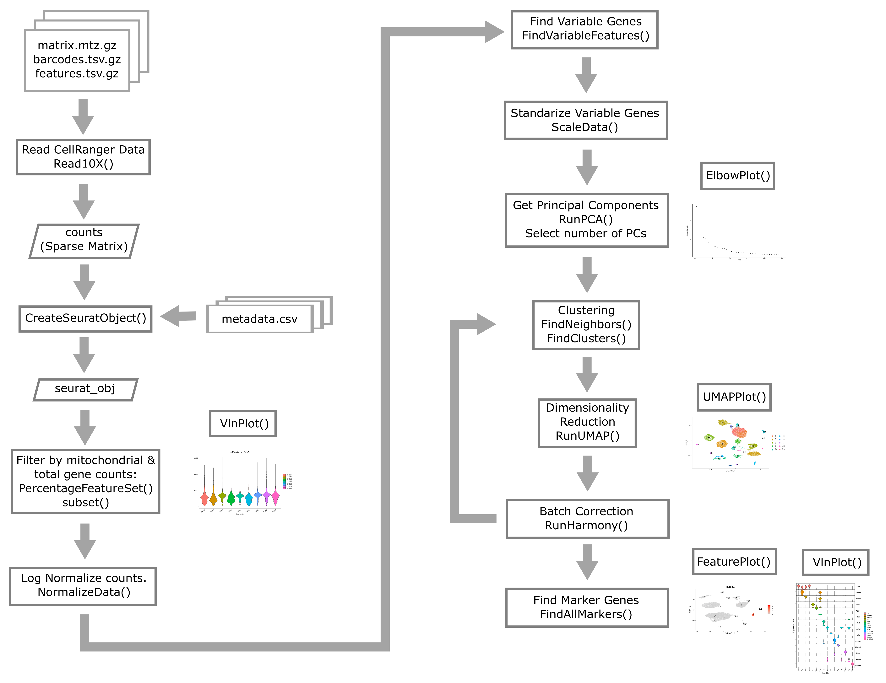
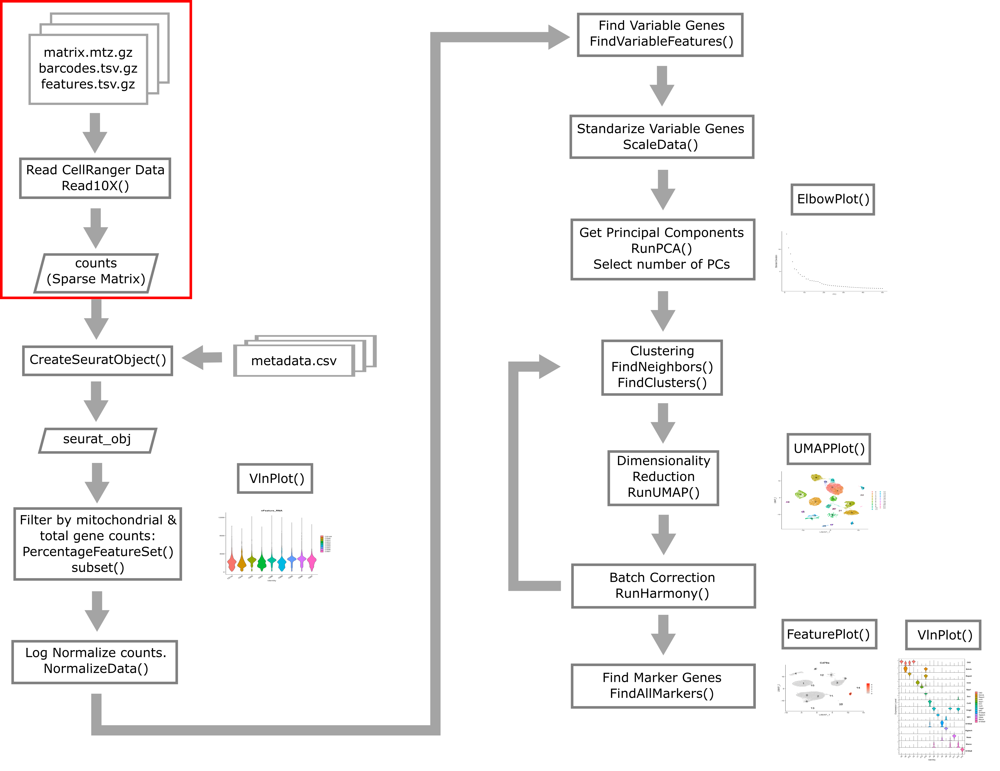
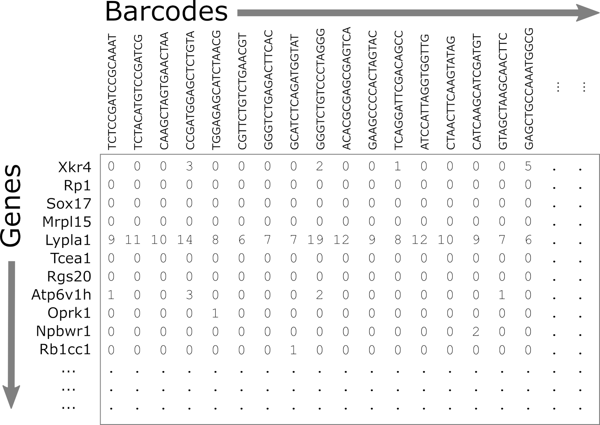
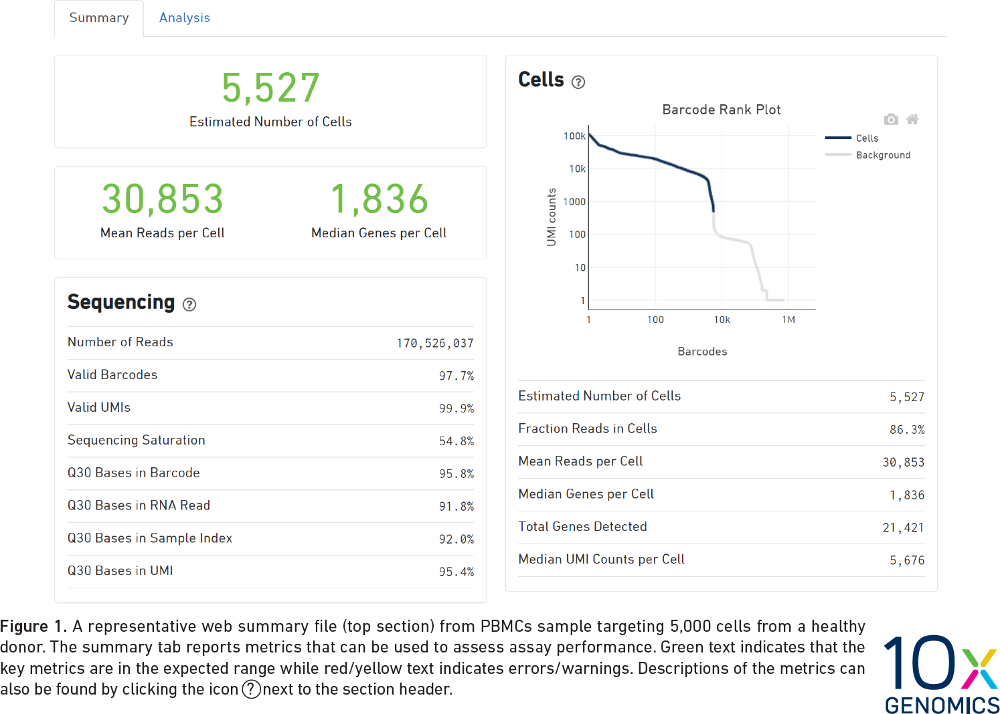
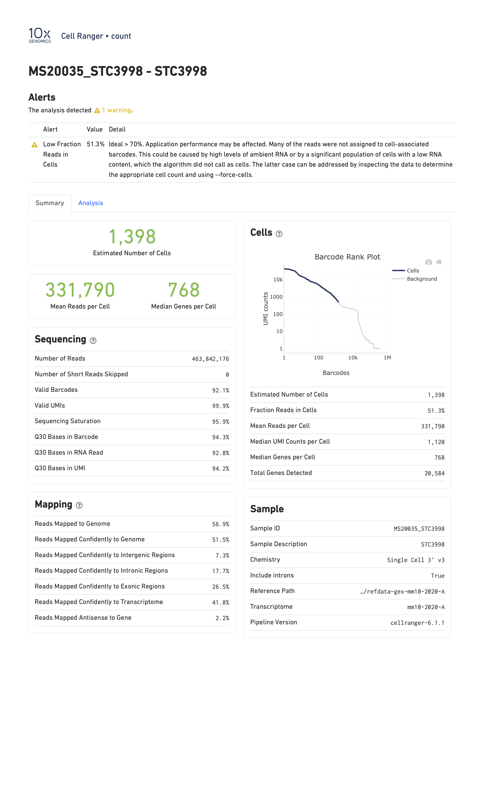
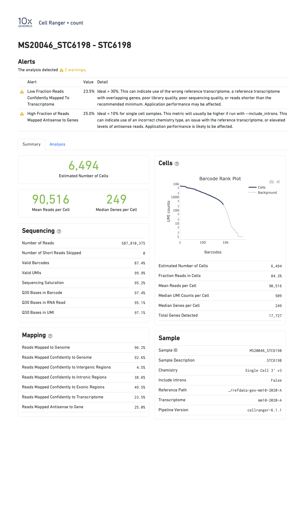

Overview of scRNA-seq Data
Overview
Teaching: 90 min
Exercises: 30 minQuestions
What does single cell RNA-Seq data look like?
Objectives
Understand the types of files provided by CellRanger.
Understand the structure of files provided by CellRanger.
Describe a sparse matrix and explain why it is useful.
Read in a count matrix using Seurat.
Overview of Single Cell Analysis Process

Open Project File
In the Setup section of this workshop, you created an RStudio Project. Open this project now, by:
- selecting File –> Open Project… from the Menu
- choosing “scRNA.Rproj”
- opening the project file.
What do raw scRNA-Seq data look like?
The raw data for an scRNA-Seq experiment typically consists of two FASTQ files. One file contains the sequences of the cell barcode and molecular barcode (UMI), while the other file contains the sequences derived from the transcript. The reads in file one are approximately 28bp long (16bp cell barcode, 12bp UMI), while the reads in file two are approximately 90bp long.
The Single Cell Biology Laboratory at JAX additionally provides output of running the 10X CellRanger pipeline (see below).
Typical pre-processing pipeline
10X CellRanger
10X CellRanger is “a set of analysis pipelines that process Chromium single cell data to align reads, generate feature-barcode matrices” and perform various other downstream analyses. In this course we will work with data that has been preprocessed using CellRanger. All you need to remember is that we used CellRanger to obtain gene expression counts for each gene within each cell.
CellRanger alternatives
There are several alternatives to CellRanger. Each of these alternatives has appealing properties that we encourage you to read about but do not have the time to discuss in this course. Alternatives include:
alevinSrivastava et al. 2019, from the developers of thesalmonalignerkallisto | bustoolsMelsted et al. 2021, from the developers of thekallistoalignerSTARsoloKaminow et al 2021, from the developers of theSTARaligner
While you should be aware that these alternatives exist and in some cases there may be very compelling reasons to use them, broadly speaking CellRanger is the most widely used tool for processing 10X Chromium scRNA-Seq data.
Introduction to two major single cell analysis ecosystems:
At the time that this workshop was created, there were many different software packages designed for analyzing scRNA-seq data in a variety of scenarios. The two scRNA-seq software “ecosystems” that were most widely in use were:
- R/Seurat : The Seurat ecosystem is the tool of choice for this workshop. The
biggest strength of Seurat is its straightforward vignettes and ease of
visualization/exploration.
- Seurat was released in 2015 by the Regev lab.
- The first author, Rahul Satija, now has a faculty position and has maintained and improved Seurat.
- Currently at version 4.
- Source code available on Github.
- Each version of Seurat adds new functionality:
- Seurat v1: Infers cellular localization by integrating scRNA-seq with in situ hybridization.
- Seurat v2: Integrates multiple scRNA-seq data sets using shared correlation structure.
- Seurat v3: Integrates data from multiple technologies, i.e. scRNA-seq, scATAC-seq, proteomics, in situ hybridization.
- Seurat v4: Integrative multimodal analysis and mapping of user data sets to cell identity reference database.
- Python/scanpy and anndata
- Scanpy is a python toolkit for analyzing single-cell gene expression data.
- Scanpy is built jointly with anndata, which is a file format specification and accompanying API for efficiently storing and accessing single cell data.
- Like Seurat, scanpy is under active development as well. Scanpy has an advantage of being a somewhat larger and more diverse community than Seurat, where developement is centered around a single lab group.
- This software has been used in a very large number of single cell projects. We encourage you to check it out and consider using it for your own work.
For this course we will not use scanpy because we view R/Seurat as having a slight edge over scanpy when it comes to visualization and interactive exploration of single cell data.
Reading in CellRanger Data

As described above, CellRanger is software which preprocesses Chromium single cell data to align reads, generate feature-bar code matrices, and perform other downstream analyses. We will not be using any of CellRanger’s downstream analyses, but we will be using the feature-barcode matrix produced by CellRanger. A feature-barcode matrix – in the context of scRNA-Seq – is a matrix that gives gene expression counts for each gene in each single cell. In a feature-barcode matrix, the genes (rows) are the features, and the cells (columns) are each identified by a barcode. The name feature-barcode matrix is a generalized term for the gene expression matrix. For example, feature-barcode could also refer to a matrix of single cell protein expression or single cell chromatin accessibility. In this workshop, we will read in the feature-barcode matrix produced by CellRanger and will perform the downstream analysis using Seurat.
Liver Atlas
Cell Ranger Files
In this lesson, we will read in a subset of data from the Liver Atlas, which is described in their Cell paper. Briefly, the authors performed scRNASeq on liver cells from mice and humans, identified cell types, clustered them, and made the data publicly available. We will be working with a subset of the mouse liver data. We split the data into two sets, one to use in the lesson and one for you to work with independently as a challenge.
Before the workshop, you should have downloaded the data from
Box and placed it in your data directory.
Go to the Setup page for instructions on how to download the data
files.
Open a file browser and look in the data subdirectory mouseStSt_invivo and
you should see three files. Each file ends with ‘gz’, which indicates that it
has been compressed (or ‘zipped’) using
gzip. You don’t need to unzip them;
the software that we use will uncompress the files as it reads them in. The
files are:
- matrix.mtx.gz: The feature-barcode matrix, i.e. a two-dimensional
matrix containing the counts for each gene in each cell.
- Genes are in rows and cells are in columns.
- This file is in a special sparse matrix format which reduces disk space and memory usage.
- barcodes.tsv.gz: DNA barcodes for each cell. Used as column names in counts matrix.
- features.tsv.gz: Gene symbols for each gene. Used as row names in counts matrix.

Challenge 1
1). R has a function called file.size. Look at the help for this function and get the size of each of the files in the
mouseStSt_invivodirectory. Which one is the largest?Solution to Challenge 1
1).
file.size(file.path(data_dir, 'mouseStSt_invivo', 'barcodes.tsv.gz'))
584346 bytes
file.size(file.path(data_dir, 'mouseStSt_invivo', 'features.tsv.gz'))
113733 bytes
file.size(file.path(data_dir, 'mouseStSt_invivo', 'matrix.mtx.gz'))
603248953 bytes
‘matrix.mtx.gz’ is the largest file.
CellRanger Quality Control Report
CellRanger also produces a Quality Control (QC) report as an HTML document. It produces one report for each sample we run (each channel of the 10X chip). We do not have the QC report from the Liver Atlas study, but the figure below shows an example report. The report highlights three numbers:
- Estimated Number of Cells: This indicates the number of cells recovered in your experiment. As we previously discussed this will be less than the number of cells you loaded. The number of cells recovered will almost never be the exact number of cells you had hoped to recover, but we might like to see a number within approximately +/-20% of your goal.
- Mean Reads per Cell: This indicates the number of reads in each cell. This will be a function of how deeply you choose to sequence your library.
- Median Genes per Cell: This indicates the median number of genes detected in each cell. Note that this is much lower than in bulk RNA-Seq. This number will also be lower for single nucleus than for single cell RNA-Seq, and is also likely to vary between cell types.

When you run a sample that has a problem of some kind, the CellRanger report might be able to detect something anomalous about your data and present you with a warning. Here are two examples of reports with warning flags highlighted.
In the report below, CellRanger notes that a low fraction of reads are within cells. This might be caused by, for example, very high levels of ambient RNA.

In the report below, CellRanger notes that a low fraction of reads are confidently mapped to the transcriptome, and a high fraction of reads map antisense to genes. Note that in this sample we are seeing only 249 genes per cell despite a mean of over 90,000 reads per cell. This likely indicates a poor quality library.

Reading a CellRanger Gene Expression Count Matrix using Seurat
In order to read these files into memory, we will use the Seurat::Read10X() function. This function searches for the three files mentioned above in the directory that you pass in. Once it verifies that all three files are present, it reads them in to create a counts matrix with genes in rows and cells in columns.
library(Seurat)
data_dir <- 'data'
We will use the gene.column = 1 argument to tell Seurat to use the first
column in ‘features.tsv.gz’ as the gene identifier.
Run the following command. This may take up to three minutes to complete.
# uses the Seurat function Read10X()
counts <- Read10X(file.path(data_dir, 'mouseStSt_invivo'), gene.column = 1)
counts now contains the sequencing read counts for each gene and cell.
How many rows and columns are there in counts?
dim(counts)
[1] 31053 47743
In the counts matrix, genes are in rows and cells are in columns. Let’s look
at the first few gene names.
head(rownames(counts), n = 10)
[1] "Xkr4" "Gm1992" "Gm37381" "Rp1" "Sox17" "Gm37323" "Mrpl15"
[8] "Lypla1" "Gm37988" "Tcea1"
As you can see, the gene names are gene symbols. There is some risk that these may not be unique. Let’s check whether any of the gene symbols are duplicated. We will sum the number of duplicated gene symbols.
sum(duplicated(rownames(counts)))
[1] 0
The sum equals zero, so there are no duplicated gene symbols, which is good. As it turns out, the reference genome/annotation files that are prepared for use by CellRanger have already been filtered to ensure no duplicated gene symbols.
Let’s look at the cell identifiers in the column names.
head(colnames(counts), n = 10)
[1] "AAACGAATCCACTTCG-2" "AAAGGTACAGGAAGTC-2" "AACTTCTGTCATGGCC-2"
[4] "AATGGCTCAACGGTAG-2" "ACACTGAAGTGCAGGT-2" "ACCACAACAGTCTCTC-2"
[7] "ACGATGTAGTGGTTCT-2" "ACGCACGCACTAACCA-2" "ACTGCAATCAACTCTT-2"
[10] "ACTGCAATCGTCACCT-2"
Each of these barcodes identifies one cell. They should all be unique. Once again, let’s verify this.
sum(duplicated(colnames(counts)))
[1] 0
The sum of duplicated values equals zero, so all of the barcodes are unique. The barcode sequence is the actual sequence of the oligonucleotide tag that was attached to the GEM (barcoded bead) that went into each droplet. In early versions of 10X technology there were approximately 750,000 barcodes per run while in the current chemistry there are >3 million barcodes. CellRanger attempts to correct sequencing errors in the barcodes and uses a “whitelist” of known barcodes (in the 10X chemistry) to help.
Next, let’s look at the values in counts.
counts[1:10, 1:20]
10 x 20 sparse Matrix of class "dgCMatrix"
[[ suppressing 20 column names 'AAACGAATCCACTTCG-2', 'AAAGGTACAGGAAGTC-2', 'AACTTCTGTCATGGCC-2' ... ]]
Xkr4 . . . . . . . . . . . . . . . . . . . .
Gm1992 . . . . . . . . . . . . . . . . . . . .
Gm37381 . . . . . . . . . . . . . . . . . . . .
Rp1 . . . . . . . . . . . . . . . . . . . .
Sox17 . . 2 4 . . . 1 . 1 1 . . 2 . . 1 8 1 .
Gm37323 . . . . . . . . . . . . . . . . . . . .
Mrpl15 . . . 1 1 . . . 1 . 2 . . . . 1 . 1 1 .
Lypla1 . . 2 1 . 1 1 . . . 1 1 2 . 1 1 1 . . .
Gm37988 . . . . . . . . . . . . . . . . . . . .
Tcea1 . . 2 . 2 2 . . 1 2 . 2 2 . . 2 1 1 2 .
We can see the gene symbols in rows along the left. The barcodes are not shown to make the values easier to read. Each of the periods represents a zero. The ‘1’ values represent a single read for a gene in one cell.
Although counts looks like a matrix and you can use many matrix functions on
it, counts is actually a different type of object. In scRNASeq, the read
depth in each cell is quite low. So you many only get counts for a small number
of genes in each cell. The counts matrix has 31053 rows and
47743 columns, and includes 1.4825634 × 109
entries. However, most of these entries
(92.4930544%) are
zeros because every gene is not detected in every cell. It would be wasteful
to store all of these zeros in memory. It would also make it difficult to
store all of the data in memory. So counts is a ‘sparse matrix’, which only
stores the positions of non-zero values in memory.
Look at the structure of the counts matrix using str.
str(counts)
Formal class 'dgCMatrix' [package "Matrix"] with 6 slots
..@ i : int [1:111295227] 15 19 36 38 40 61 66 67 70 93 ...
..@ p : int [1:47744] 0 3264 6449 9729 13446 16990 20054 23142 26419 29563 ...
..@ Dim : int [1:2] 31053 47743
..@ Dimnames:List of 2
.. ..$ : chr [1:31053] "Xkr4" "Gm1992" "Gm37381" "Rp1" ...
.. ..$ : chr [1:47743] "AAACGAATCCACTTCG-2" "AAAGGTACAGGAAGTC-2" "AACTTCTGTCATGGCC-2" "AATGGCTCAACGGTAG-2" ...
..@ x : num [1:111295227] 1 1 1 2 1 6 1 1 2 1 ...
..@ factors : list()
We can see that the formal class name is a “dgCMatrix”. There are two long vectors of integers which encode the positions of non-zero values. The gene names and cell barcodes are stored in character vectors and the non-zero values are an integer vector. This class saves space by not allocating memory to store all of the zero values.
Let’s look at small portion of counts. We will create a tile plot indicating
which values are non-zero for the first 100 cells and genes in rows 400 to 600.
For historical reasons, R plots the rows along the X-axis and columns along the
Y-axis. We will transpose the matrix so that genes are on the Y-axis, which
reflects the way in which we normally look at this matrix.
image(1:100, 400:600, t(as.matrix(counts[400:600,1:100]) > 0),
xlab = 'Cells', ylab = 'Genes')
plot of chunk counts_image
In the tile plot above, each row represents one gene and each column represents one cell. Red indicates non-zero values and yellow indicates zero values. As you can see, most of the matrix consists of zeros (yellow tiles) and hence is called ‘sparse’. You can also see that some genes are expressed in most cells, indicated by the horizontal red lines, and that some genes are expressed in very few cells.
What proportion of genes have zero counts in all samples?
gene_sums <- data.frame(gene_id = rownames(counts),
sums = Matrix::rowSums(counts))
sum(gene_sums$sums == 0)
[1] 7322
We can see that 7322 (24%) genes have no reads at all associated with them. In the next lesson, we will remove genes that have no counts in any cells.
Next, let’s look at the number of counts in each cell.
hist(Matrix::colSums(counts))
plot of chunk cell_counts
Matrix::colSums(counts) %>%
enframe() %>%
ggplot(aes(value)) +
geom_histogram(bins = 30) +
scale_x_log10() +
theme_bw(base_size = 16)
plot of chunk cell_counts
The range of counts covers several orders of magnitude, from 500 to 3.32592 × 105. We will need to normalize for this large difference in sequencing depth, which we will cover in the next lesson.
Sample Metadata
Sample metadata refers to information about your samples that is not the “data”, i.e. the gene counts. This might include information such as sex, tissue, or treatment. In the case of the liver atlas data, the authors provided a metadata file for their samples.
The sample metadata file is a comma-separated variable (CSV) file, We will read it in using the readr read_csv function.
metadata <- read_csv(file.path(data_dir, 'mouseStSt_invivo', 'annot_metadata_first.csv'))
Rows: 47743 Columns: 4
── Column specification ───────────────────────────────────────────────────────────────────────────────────────────────
Delimiter: ","
chr (4): sample, cell, digest, typeSample
ℹ Use `spec()` to retrieve the full column specification for this data.
ℹ Specify the column types or set `show_col_types = FALSE` to quiet this message.
Let’s look at the top of the metadata.
head(metadata)
# A tibble: 6 × 4
sample cell digest typeSample
<chr> <chr> <chr> <chr>
1 CS48 AAACGAATCCACTTCG-2 inVivo scRnaSeq
2 CS48 AAAGGTACAGGAAGTC-2 inVivo scRnaSeq
3 CS48 AACTTCTGTCATGGCC-2 inVivo scRnaSeq
4 CS48 AATGGCTCAACGGTAG-2 inVivo scRnaSeq
5 CS48 ACACTGAAGTGCAGGT-2 inVivo scRnaSeq
6 CS48 ACCACAACAGTCTCTC-2 inVivo scRnaSeq
In the table above, you can see that there are four columns:
- sample: mouse identifier from which cell was derived;
- cell: the DNA bar code used to identify the cell;
- digest: cells for this liver atlas were harvested using either an in vivo or an ex vivo procedure. In this subset of the data we are looking only at in vivo samples;
- typeSample: the type of library preparation protocol, either single cell RNA-seq (scRnaSeq) or nuclear sequencing (nucSeq). In this subset of the data we are looking only at scRnaSeq samples.
Let’s confirm that we are only looking at scRnaSeq samples from in vivo digest cells:
dplyr::count(metadata, digest, typeSample)
# A tibble: 1 × 3
digest typeSample n
<chr> <chr> <int>
1 inVivo scRnaSeq 47743
We’re going to explore the data further using a series of Challenges. You will be asked to look at the contents of some of the columns to see how the data are distributed.
Challenge 2
How many mice were used to produce this data? The “sample” column contains the mouse identifier for each cell.
Solution to Challenge 2
count(metadata, sample) %>% summarize(total = n())
Challenge 3
How many cells are there from each mouse?
Solution to Challenge 3
count(metadata, sample)
In this workshop, we will attempt to reproduce some of the results of the Liver Atlas using Seurat. We will analyze the in-vivo single cell RNA-Seq together.
Save Data for Next Lesson
We will use the in-vivo data in the next lesson. If you plan to keep your RStudio open, we will simply continue to the next lesson. If you wanted to save the data you could execute a command like:
save(counts, metadata, file = file.path(data_dir, 'lesson03.Rdata'))
Challenge 5
In the lesson above, you read in the scRNASeq data. There is another dataset which was created using an ex vivo digest in the
mouseStSt_exvivodirectory. Delete thecountsandmetadataobjects from your environment. Then read in the counts and metadata from themouseStSt_exvivodirectory and save them to a file called ‘lesson03_challenge.Rdata’.Solution to Challenge 5
# Remove exising counts and metadata.
rm(counts, metadata)# Read in new counts.
counts <- Seurat::Read10X(file.path(data_dir, 'mouseStSt_exvivo'), gene.column = 1)
# Read in new metadata.
metadata <- read_csv(file.path(data_dir, 'mouseStSt_exvivo', 'annot_metadata.csv'))
# Save data for next lesson.
save(counts, metadata, file = file.path(data_dir, 'lesson03_challenge.Rdata'))
Session Info
sessionInfo()
R version 4.4.1 (2024-06-14)
Platform: x86_64-apple-darwin20
Running under: macOS 15.0.1
Matrix products: default
BLAS: /Library/Frameworks/R.framework/Versions/4.4-x86_64/Resources/lib/libRblas.0.dylib
LAPACK: /Library/Frameworks/R.framework/Versions/4.4-x86_64/Resources/lib/libRlapack.dylib; LAPACK version 3.12.0
locale:
[1] en_US.UTF-8/en_US.UTF-8/en_US.UTF-8/C/en_US.UTF-8/en_US.UTF-8
time zone: America/New_York
tzcode source: internal
attached base packages:
[1] stats graphics grDevices utils datasets methods base
other attached packages:
[1] Seurat_5.1.0 SeuratObject_5.0.2 sp_2.1-4 lubridate_1.9.3
[5] forcats_1.0.0 stringr_1.5.1 dplyr_1.1.4 purrr_1.0.2
[9] readr_2.1.5 tidyr_1.3.1 tibble_3.2.1 ggplot2_3.5.1
[13] tidyverse_2.0.0 knitr_1.48
loaded via a namespace (and not attached):
[1] deldir_2.0-4 pbapply_1.7-2 gridExtra_2.3
[4] rlang_1.1.4 magrittr_2.0.3 RcppAnnoy_0.0.22
[7] spatstat.geom_3.3-3 matrixStats_1.4.1 ggridges_0.5.6
[10] compiler_4.4.1 png_0.1-8 vctrs_0.6.5
[13] reshape2_1.4.4 crayon_1.5.3 pkgconfig_2.0.3
[16] fastmap_1.2.0 labeling_0.4.3 utf8_1.2.4
[19] promises_1.3.0 tzdb_0.4.0 bit_4.5.0
[22] xfun_0.48 jsonlite_1.8.9 goftest_1.2-3
[25] highr_0.11 later_1.3.2 spatstat.utils_3.1-0
[28] irlba_2.3.5.1 parallel_4.4.1 cluster_2.1.6
[31] R6_2.5.1 ica_1.0-3 spatstat.data_3.1-2
[34] stringi_1.8.4 RColorBrewer_1.1-3 reticulate_1.39.0
[37] spatstat.univar_3.0-1 parallelly_1.38.0 lmtest_0.9-40
[40] scattermore_1.2 Rcpp_1.0.13 tensor_1.5
[43] future.apply_1.11.2 zoo_1.8-12 R.utils_2.12.3
[46] sctransform_0.4.1 httpuv_1.6.15 Matrix_1.7-0
[49] splines_4.4.1 igraph_2.0.3 timechange_0.3.0
[52] tidyselect_1.2.1 abind_1.4-8 spatstat.random_3.3-2
[55] codetools_0.2-20 miniUI_0.1.1.1 spatstat.explore_3.3-2
[58] listenv_0.9.1 lattice_0.22-6 plyr_1.8.9
[61] shiny_1.9.1 withr_3.0.1 ROCR_1.0-11
[64] evaluate_1.0.1 Rtsne_0.17 future_1.34.0
[67] fastDummies_1.7.4 survival_3.6-4 polyclip_1.10-7
[70] fitdistrplus_1.2-1 pillar_1.9.0 KernSmooth_2.23-24
[73] plotly_4.10.4 generics_0.1.3 vroom_1.6.5
[76] RcppHNSW_0.6.0 hms_1.1.3 munsell_0.5.1
[79] scales_1.3.0 globals_0.16.3 xtable_1.8-4
[82] glue_1.8.0 lazyeval_0.2.2 tools_4.4.1
[85] data.table_1.16.2 RSpectra_0.16-2 RANN_2.6.2
[88] leiden_0.4.3.1 dotCall64_1.2 cowplot_1.1.3
[91] grid_4.4.1 colorspace_2.1-1 nlme_3.1-164
[94] patchwork_1.3.0 cli_3.6.3 spatstat.sparse_3.1-0
[97] spam_2.11-0 fansi_1.0.6 viridisLite_0.4.2
[100] uwot_0.2.2 gtable_0.3.5 R.methodsS3_1.8.2
[103] digest_0.6.37 progressr_0.14.0 ggrepel_0.9.6
[106] htmlwidgets_1.6.4 farver_2.1.2 R.oo_1.26.0
[109] htmltools_0.5.8.1 lifecycle_1.0.4 httr_1.4.7
[112] mime_0.12 bit64_4.5.2 MASS_7.3-60.2
Key Points
CellRanger produces a gene expression count matrix that can be read in using Seurat.
The count matrix is stored as a sparse matrix with features in rows and cells in columns.